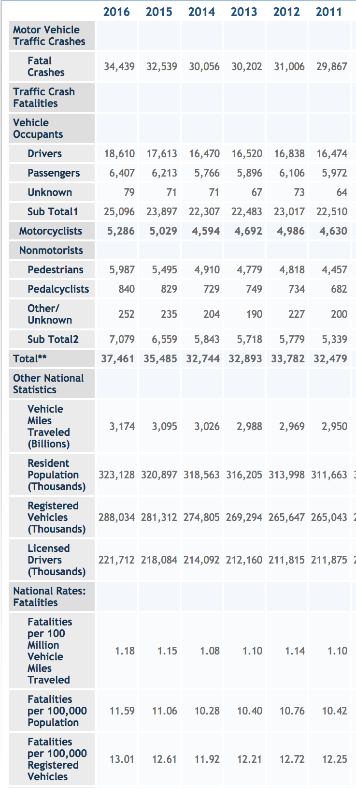
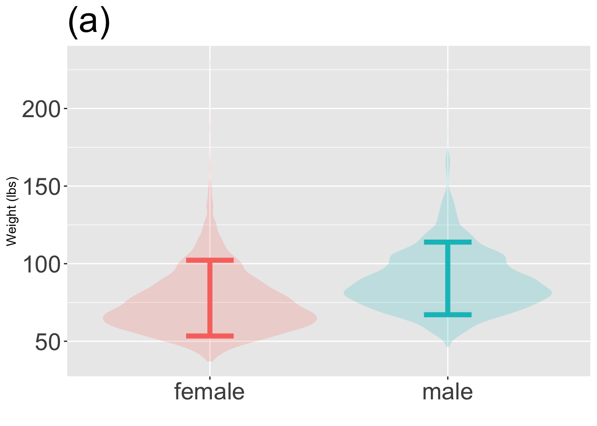
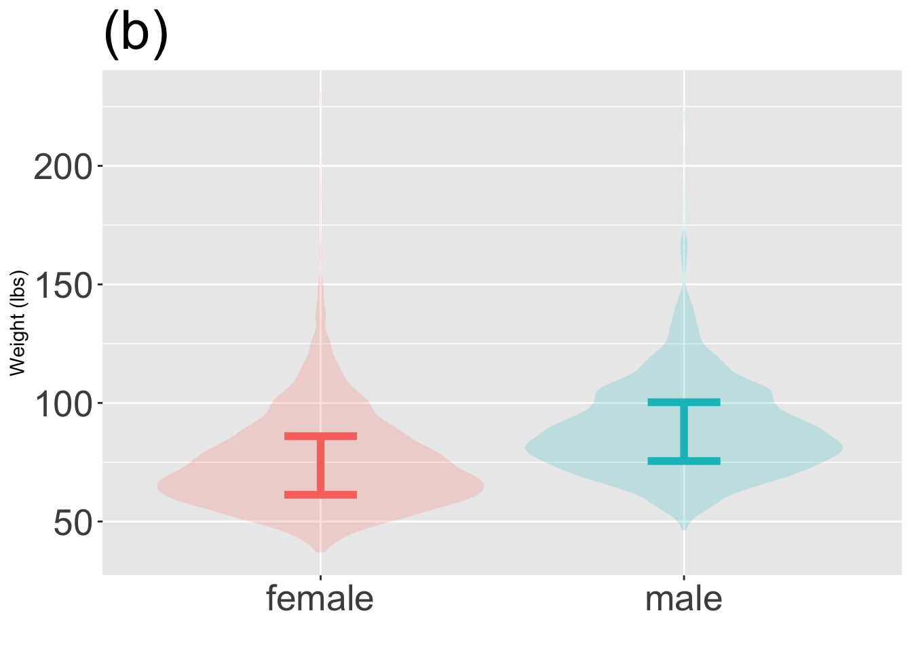
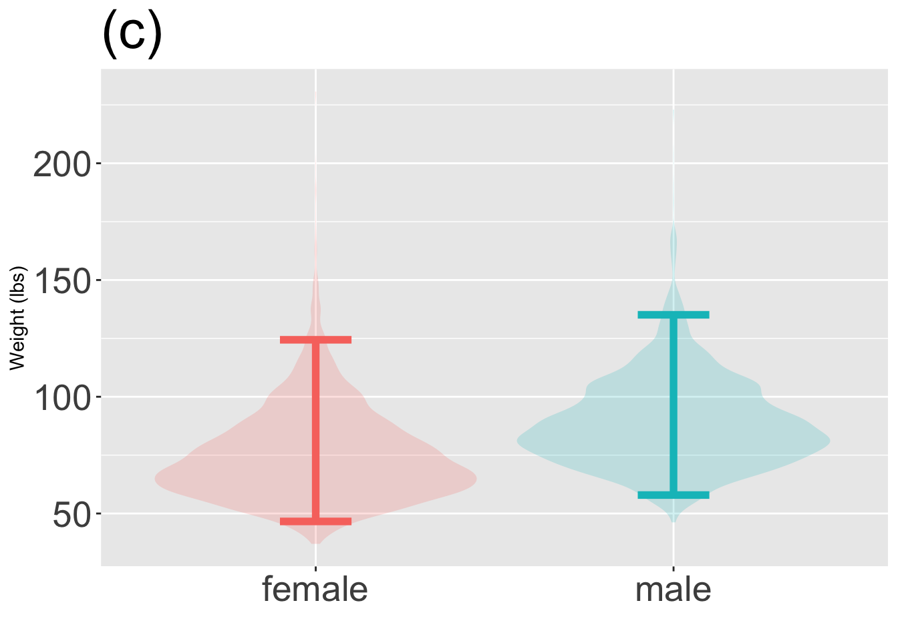
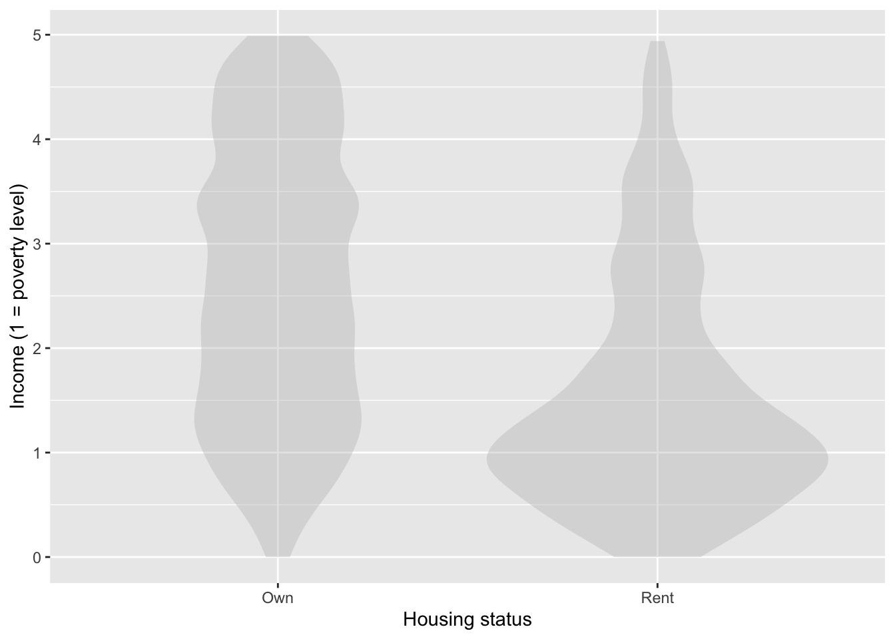
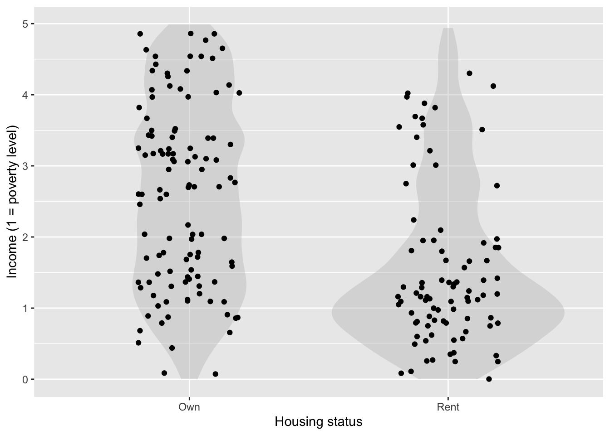
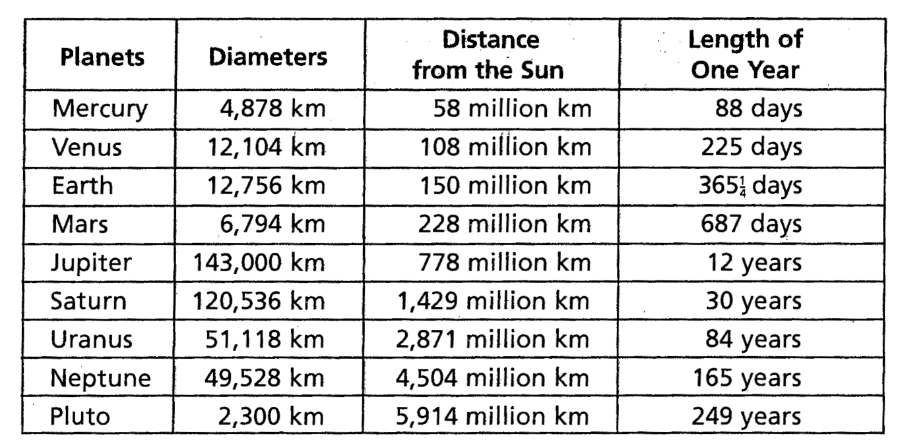
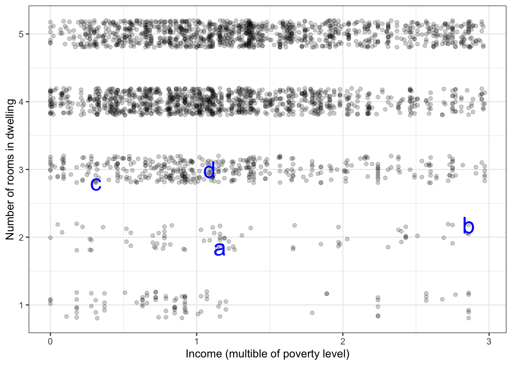

Additional LC for first half of course
Tidying data
The US Department of Transportation has a program called the Fatality Analysis Reporting System. FARS has a web site which publishes data. Figure Figure 1 shows partial screen shot of their web page.
For several reasons, the table is not in tidy form.
Some of the rows serve as headers for the next several rows, but don’t contain any data. Identify several of those headers. -A- “Motor vehicle traffic crashes”, “Traffic crash fatalities”, “Vehicle occupants”, “Non-motorists”, “Other national statistics”, “National rates: fatalities”
In tidy data, all the entries in a column should describe the same kind of quantity. You can see that all of the columns contain numbers. But the numbers are not all the same kind of quantity. Referring to the 2016 column:
- What kind of thing is the number 34,439? -A- A number of crashes
- What kind of thing is 18,610? -A- A number of drivers
- What kind of thing is 1.18? -A- A rate: fatalities per 100-million miles.
In tidy data, there is a definite unit of observation that is the same kind of thing for every row. Give an example of two rows that are not the same kind of thing. -A- For example, “Registered vehicles” and “Licensed drivers”. The first is a count of cars, the second a count of drivers.
Identify a few rows that are summaries of other rows. Such summaries are not themselves a unit of observation. -A- “Sub Total1”, “Sub Total2”, “Total**”
Graphics
The three graphs below show the distribution of weights broken down by sex. The violin layer is the same in each graph. Each graph has a coverage interval at one of these levels: 25% 50%, 80%, 95%. Which graph has which coverage interval? Which of the listed coverage intervals is not shown in any graph?
Attaching package: 'dplyr'The following objects are masked from 'package:stats':
filter, lagThe following objects are masked from 'package:base':
intersect, setdiff, setequal, unionRegistered S3 method overwritten by 'mosaic':
method from
fortify.SpatialPolygonsDataFrame ggplot2
The 'mosaic' package masks several functions from core packages in order to add
additional features. The original behavior of these functions should not be affected by this.
Attaching package: 'mosaic'The following object is masked from 'package:Matrix':
meanThe following object is masked from 'package:ggplot2':
statThe following objects are masked from 'package:dplyr':
count, do, tallyThe following objects are masked from 'package:stats':
binom.test, cor, cor.test, cov, fivenum, IQR, median, prop.test,
quantile, sd, t.test, varThe following objects are masked from 'package:base':
max, mean, min, prod, range, sample, sum


Violin plots
The graph below is a violin plot. Using a pencil and your intuition, add a few dozen dots to the graphic as they would appear in a data layer superimposed on the violin layer. The dots should be jittered and be consistent with the shape of the violins.

Solution
Where the violin is wider, there is a greater concentration of dots. In a jittered plot, the exact horizontal position of the dots has no significance.

Untidy data
List what’s not tidy about this table.

Solution
- Units ought to be in the codebook.
- The “length of year” variable is in a mixture of units. Some rows are (Earth) days, others are (Earth) years.
- The numbers have commas, which are intended for human consumption. Data tables are for machine consumption and the commas are a nuisancwe.
- The \(\frac{1}{4}\) in the “length of year” column is not a standard computer numeral. Write 365.25 instead.
Calculating new variables from old.
TITLE GOES HERE: Often, a data scientist needs to calculate some new quantity from the quantities already available in a data table. Proper data computing software makes this easy to do in a manner that is clear even to an inexperienced reader. For example, the following statement will take a data frame named Fatality_data with the structure of ?@tbl-pine-hit-pants and augment it with a new variable total_fatalities that gives the total number of fatalities in each year
FARS <-
FARS %>%
mutate(total_fatalities = drivers + passengers + unknown)?(caption)
| year | crashes | drivers | passengers | unknown | miles | resident_pop | total_fatalities |
|---|---|---|---|---|---|---|---|
| 2016 | 34439 | 18610 | 6407 | 79 | 3174 | 323128 | 25096 |
| 2015 | 32539 | 17613 | 6213 | 71 | 3095 | 320897 | 23897 |
| 2014 | 30056 | 16470 | 5766 | 71 | 3026 | 318563 | 22307 |
The mutate() function does the work of creating the new variable. The text between the opening parenthesis and the corresponding closing parenthesis is the argument to mutate(), which gives the specifics of what to do.
For each of the following, write the argument for a mutate() statement that will produce the desired new variable. You can assume that total_fatalities is already one of the existing variables. (We created it above!)
- Fatalities per crash. ::: {.callout-note} ##Solution
fatalities_per_crash = total_fatalities / crash:::
- Fatalities per million vehicle miles. ::: {.callout-note} ##Solution
fatalities_per_distance = total_fatalities / (miles * 1000)Divide the total number of fatalities by the number of vehicle miles travelled.
Why the multiplication by 1000? Recall that miles is in billions of vehicle miles, while we want the units of fatalities_per_distance to be fatalities per million vehicle miles. The 1000 performs the conversion from billions to millions. :::
- Number of crashes per million vehicle miles. ::: {.callout-note} ##Solution
crashes_per_distance = crashes / (miles * 1000)::: d. Referring back to the original data shown in Figure @ref(fig:bear-ride-pants-1), you can see that the calculation of total fatalities in the introduction to this problem left out the number of motorcyclist and nonmotorist fatalities. Modify the calculation of total fatalities to include these, assuming they are represented by motorcyclist and nonmotorist respectively. ::: {.callout-note} ##Solution
total_fatalities = drivers + passengers + unknown +
motorcyclist + nonmotorist:::
——–=
Unit of observation
The data table below records activity at a neighborhood car repair shop.
| mechanic | product | price | date |
|---|---|---|---|
| Anne | starter | 170.00 | 2019-01-12 |
| Beatrice | shock absorber | 78.42 | 2019-01-12 |
| Anne | alternator | 385.95 | 2019-01-12 |
| Clarisse | brake shoe | 39.50 | 2019-01-12 |
| Clarisse | brake shoe | 39.50 | 2019-01-12 |
| Beatrice | radiator hose | 17.90 | 2019-02-12 |
The codebook for a data table should describe what is the unit of observation. For the purpose of this exercise, your job is to comment on each of the following possibilities and say why or why not this is plausibly the unit of observation.
- a day. -A- There must be more to it than that, since the same date may be repeated with different values for the other variables.
- a mechanic. -A- No. The same mechanic appears multiple times, so the unit of observation is not simply a mechanic.
- a car part used in a repair. -A- Could be, for instance if every time a mechanic installs a part a new entry is added to the table describing the part, its price, the date, and the mechanic doing the work.
Graphics and data
The graphic below contains a single data layer. Four of the data points are annotated with letters in order to identify them specifically.

Part 1
- Is the income level of “a” greater than “b”? -A- no
- Is the income level of “d” greater than “a”? -A- no
- Is the number of rooms greater for “b” than for “a”? -A- no
- Is the number of rooms greater for “c” than for “a”? -A- no
Part 2
Here is the data plotted in the figure.
| row | income | number_of_rooms |
|---|---|---|
| 1 | 0.90 | 1 |
| 2 | 1.00 | 3 |
| 3 | 0.31 | 3 |
| 4 | 0.85 | 1 |
| 5 | 1.09 | 3 |
| 6 | 1.19 | 2 |
| 7 | 1.01 | 1 |
| 8 | 1.09 | 3 |
| 9 | 1.16 | 2 |
| 10 | 2.86 | 2 |
| ... and so on for 2,765 rows altogether. |
The points a, b, c, and d, are shown in the table. For each of a, b, c, d, say which row corresponds to the point. -A- a is row 8, b is row 7, c is row 2, d is row 1